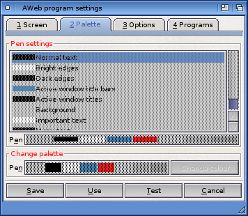

Program settings: Palette

On this settings page, you can change the colour settings for the AWeb own public screen, much like the Workbench Palette preferences program does for the Workbench screen.
The gadgets on this settings page are only accessible if AWeb runs on its own screen. When using another screen, you should use the colour settings method provided by the owner of that screen.
The palette settings are only effective when AWeb opens its own screen. When using another screen, it respects the settings for that screen.
This settings page has two major parts.
Pen settings
The list, and the upper palette button row, specify the screen pen settings, comparable to the right-hand part of the Workbench Palette program. To change a pen, first select the pen from the list, then select the color from the palette.
Change palette
The lower palette button row allows you to change the actual color of the pens. This is comparable to the left-hand part of the Workbench Palette program. Press the Change colour button to pop up a colour requester for the selected colour from the palette.
 Screen
Screen
 Settings requesters
Settings requesters
 Options
Options